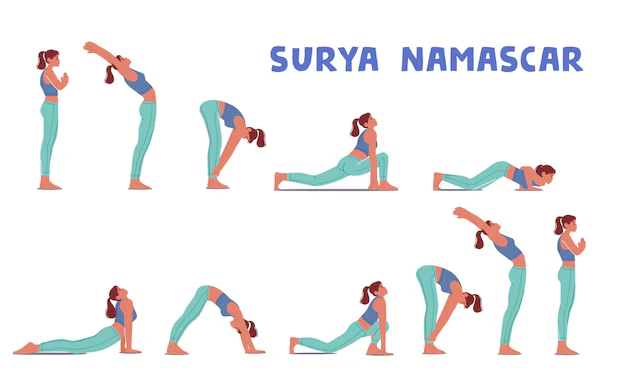

Kapha Dosha is made of earth and water.It gives you
strength, steady energy, and a calm nature.When
Kapha is balanced, you feel loving, patient, and healthy.
If it’s out of balance, you might feel tired,heavy, or get
colds and congestion. Staying active,eating warm
light meals, and keeping a lively routine help Kapha stay in balance.
Tips for Balancing Kapha Dosha
Foods to Cut down from Diet:
Refined and oily foods,milk and milk products.
Foods to consume to Balance Kapha dosha:
Homemade spicy food,fresh fruits,ginger tea.
Yoga Asanas to Balance Kapha Dosha:
1.Surya Namaskar

2.Bhujangasana
3.Pranayam:Kapalabharti